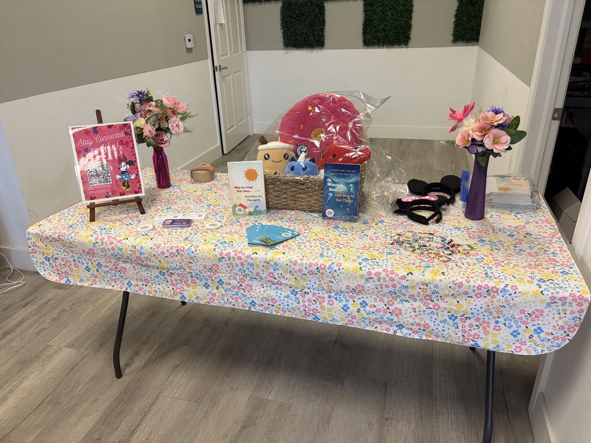

Events
Come meet us in person. Our events are free, welcoming, and built around practical tools your family can use the same day.
The Parent Station
Pelican Boulevard, Cape Coral
Saturday, October 31, 2026, 6 to 10 PM. Our inaugural fall event, a free evening built for parents on Pelican Boulevard in Cape Coral. About 500 free family bags will be given out, each with a Lantern Project magnet that opens free emotional intelligence resources, plus coupons and offers from local businesses.
Free holiday raffle: all followers of our Facebook Page are automatically entered. Entries close Saturday, November 14, 2026 at 11:59 PM, and winners will be announced on Sunday, November 15, 2026 on our Facebook and Instagram pages and contacted directly.
Also on October 31: Reignite Rotary Expo
Visit our expo table
The same day, our team will also be at the Reignite Rotary expo sharing free Lantern Project resources. We are preparing 100 family bags for expo visitors, carrying the large Lantern magnets sponsored by Mini Split Specialist. Stop by the table, take a resource home, and follow our page to be entered in the free holiday raffle.
Community Workshops
We offer workshops for parents, educators, and organizations on practical emotional intelligence tools. Workshops are scheduled on request for groups and organizations; reach out and we will build one for yours.
Ask about a workshop →
Past Events

Wellness Community Market
October 3, 2026: The Guided Pathway Foundation joined the Wellness Community Market at Bottega Exchange in Las Vegas, hosted by Her Alchemy and I Am A Mom's Mom as part of the 6 Weeks of Wellness collection. We spent Saturday morning sharing the Lantern Project with the many families that stopped by our table, and guests took home our free self help emotional intelligence guide along with a few treats and a smile.
A Million Steps for Scleroderma, Las Vegas
August 29, 2026: The Guided Pathway Foundation joined A Million Steps for Scleroderma at Meadows Mall in Las Vegas as a community organization and sponsor. More than 80 participants walked and the event raised $17,532 for scleroderma research and support. Our team distributed around 100 Lantern Project pathway magnets, putting free emotional intelligence tools into the hands of families across the community.

Women's Leadership Conference
September 2026: The Guided Pathway Foundation was a Promotional Gift Bag Sponsor at the Chamber of Commerce of Cape Coral's 15th Annual Women's Leadership Conference, placing 150 Lantern Project magnets into attendee gift bags.

Meet a Famous Mouse and Community Fundraiser
July 18, 2026: The Guided Pathway Foundation teamed up with The Zone Nutrition at 2612 Santa Barbara Boulevard South in Cape Coral for a morning of family fun in support of the Lantern Project. Guests met a famous mouse, posed for photos for a $5 donation, and entered the community raffle with a donation of $10 or more, with double entries for guests who followed and tagged both hosts on Facebook. Raffle prizes included a gift basket donated by Culver's through Miguel Carmona, with eight meal vouchers valued at $200, and a gift certificate from Cooter's Cans.
Our July Raffle Winner
Congratulations to our raffle winner, pictured here with her prize basket at The Zone Nutrition. Thank you to everyone who came out, took a photo, and gave. Every dollar raised helps place free emotional intelligence tools into more hands across our community.

Lantern Community Resource Campaign
July 2026: The Guided Pathway Foundation launched the Lantern Community Resource Campaign, inviting local companies to list their community resources on the Lantern Project site, putting free emotional wellness tools and local support side by side where families can find them. Businesses including Cooter's Cans and the Golisano Children's Museum of Naples joined the campaign.
Thank You to Our Sponsors
Mini Split Specialist funded a 500 magnet Lantern Project run carrying their sponsor band, putting free emotional intelligence resources directly into the community's hands. Thank you for lighting the path with us.
Thank you as well to the local businesses standing behind The Parent Station on October 31: Texas Roadhouse, Culver's, Give Energy Make Smiles, TJ Maxx, HomeSense, The Zone Nutrition, Gypsy Out Law, Torched Bar and Grill, Bubba's Roadhouse, Prime239, A Pooch's Paradise, SB Skin and Wax Bar, and Cooter's Cans.
Want to Co Host an Event?
Schools, businesses, and community groups are welcome to partner with us on workshops and distributions. Tell us about your community and we will build the right event together.